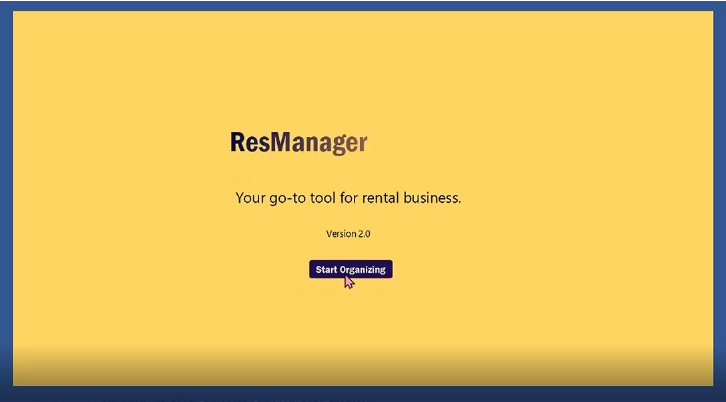

RESMANAGER 2021
This application was built using Java, a local SQL database to save information input by the user and FXML for the GUI. The GUI interface was manually built using SceneBuilder. The fxml files created in SceneBuilder, were imported into the Java project.

The desired experience for a user in the context of this project was to create an application that would help in the organization of important information related to the rental business. In other words, the target user of this application is someone who is part of the rental business. The desktop application is separated into multiple sections including financial institutions, contractors, leases, properties, and tenants. Each section contains specific information it must store. When using the application, as planned it must have an easy-to-use UI and be pleasing to look at. That is why I chose to use a simple design consisting of tables, buttons, and drop-down lists. For the look of this web application, I chose a simple color palette consisting of the colors blue, yellow, grey, white, and black.